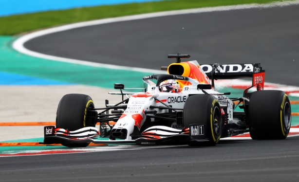
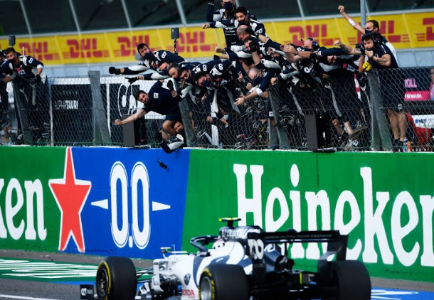
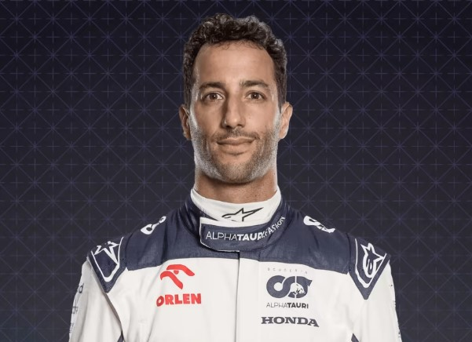
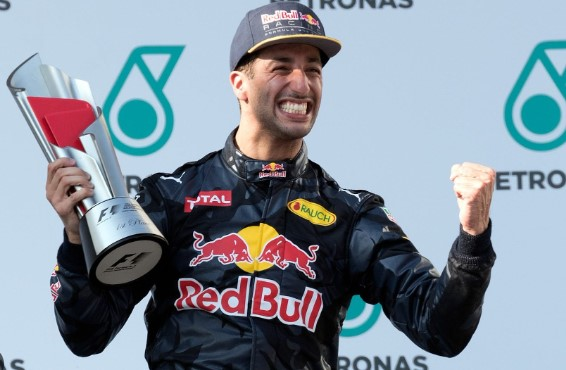
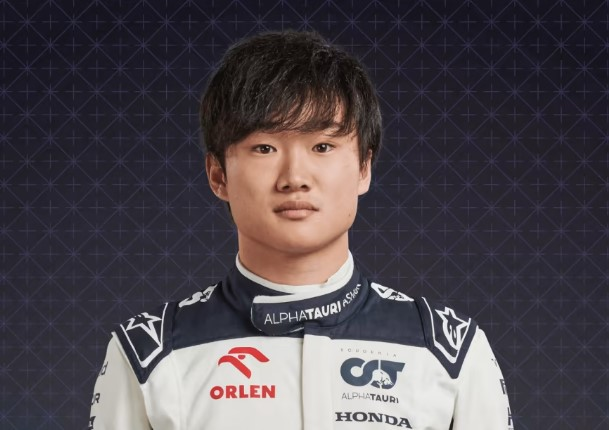
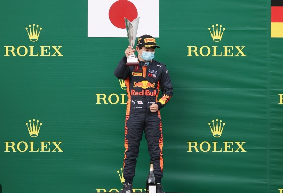
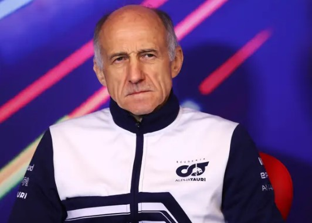
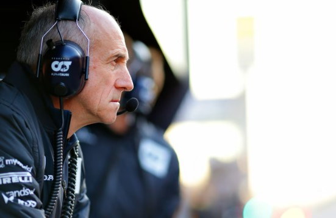

Scuderia AlphaTauri
 - Base: Faenza, Italy
- Team Chief: Franz Tost
- Technical Chief: Jody Egginton
- Chassis:AT04
- Power Unit:Honda RBPT
- First Team Entry: 1985
- World Championships: N/A
- Highest Race Finish: 1st
- Pole Positions: 1
- Fastest Laps: 2
Scuderia AlphaTauri, or simply AlphaTauri, is an Italian Formula One racing team and constructor. It is one of two Formula One constructors owned by Austrian conglomerate Red Bull GmbH, the other being Red Bull Racing. The constructor was rebranded for the 2020 Formula One World Championship from "Toro Rosso" to "AlphaTauri" in order to promote the AlphaTauri fashion brand. According to Franz Tost and Helmut Marko, Scuderia AlphaTauri is no longer the junior team but the sister team to Red Bull Racing
Race Drivers:
- Daniel Ricciardo :  
- Yuki Tsunoda :  
Daniel Joseph Ricciardo AM (/rɪˈkɑːrdoʊ/ "Ricardo", Italian: [ritˈtʃardo]; born 1 July 1989) is an Australian and Italian racing driver currently competing in Formula One for Scuderia AlphaTauri under the Australian flag. He has achieved 8 Grand Prix victories and 32 podiums in Formula One.Ricciardo made his debut at the 2011 British Grand Prix with the HRT team as part of a deal with Red Bull Racing, for whom he was test driving under its sister team Scuderia Toro Rosso. He joined Toro Rosso in 2012 full-time after the team changed its driver lineup and drove a Ferrari-powered car for them in 2012 and 2013. In 2014, Ricciardo was promoted to Red Bull as a replacement for the retiring Mark Webber alongside Sebastian Vettel. In his first season with Red Bull under Renault power, Ricciardo finished third in the championship with his first three Formula One wins, in Canada, Hungary, and Belgium.
( born 11 May 2000) is a Japanese racing driver currently competing in Formula One for Scuderia AlphaTauri. Supported by Honda since 2016 through the Honda Formula Dream Project [ja], he was the 2018 Japanese F4 champion and in 2019 also received backing from Red Bull.[2] He finished third in the 2020 Formula 2 Championship and made his Formula One debut in 2021 for AlphaTauri.
Reserve Driver:
- LIAM LAWSON:


Liam Lawson (born 11 February 2002) is a New Zealand motor racing driver who currently competes in the 2023 Super Formula Championship with Team Mugen. Lawson, who is mentored by three-time New Zealand Grand Prix winner Ken Smith, previously competed for the Carlin team in the FIA Formula 2 Championship, where he finished third in 2022. He is a previous Toyota Racing Series champion and member of the Red Bull Junior Team, In 2021, he also raced for the Red Bull AF Corse team in the Deutsche Tourenwagen Masters, partnering Alex Albon, narrowly missing out on the championship in the last round.
Team principal:
- Franz Tost:  
Franz Tost (born 20 January 1956 in Trins, Austria) is an Austrian former racing driver and the current team principal of the Scuderia AlphaTauri Formula One team, departing at the end of the 2023 Formula One season.In 2000 Ralf Schumacher joined the Williams Formula 1 team. Tost followed him, working for Williams' engine supplier BMW as Track Operations Manager until 1 January 2006.In 2005 Tost was appointed as the team principal of Scuderia Toro Rosso which was the new name of former team Minardi after Red Bull acquired the team. Tost stated that he would aim for fifth place in the Constructors' Championship. He achieved his best results with the team in 2008, 2019 and 2021 landing in the sixth spot in each of these seasons